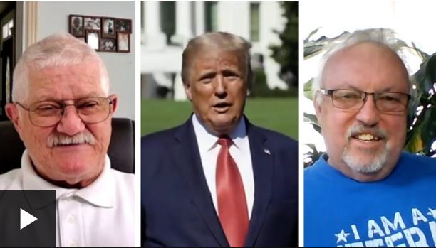

White House rally: Trump holds first public event since Covid diagnosis
10 October 2020
Donald Trump has delivered a speech in front of cheering supporters at the White House in his first public appearance since being hospitalised.
The event was officially a "peaceful protest", but looked, critics said, much like a Trump campaign rally.
The president, who says he is no longer taking medicines against Covid-19, told the crowd he was "feeling great".
The White House has not provided an update on the president's health since Thursday.
It is unclear whether the president remains contagious following his three-day hospital stay with Covid-19.
His rival in next month's presidential election, Joe Biden, has been campaigning in Pennsylvania. He said his "heart goes out" to all those families who have lost someone they love to coronavirus.
Polling suggests Mr Biden has a single-digit lead over Mr Trump and an ABC News/Ipsos poll found that just 35% of Americans approved of how Mr Trump has handled the coronavirus crisis.
More than 210,000 Americans are known to have died of Covid-19.
What did Mr Trump say at the White House event?
Saturday's White House gathering was partly organised by a foundation called "Blexit", which aims to get black and Latino voters to support the Republican party.
The president, who was not wearing a mask, railed against Mr Biden, describing the Democrat's programme as "beyond socialism - Communist, that's about right". Mr Biden is generally considered to be a moderate Democrat.
Mr Trump repeated his previous assertion that he had done more for the black community than any president since Abraham Lincoln - a claim the BBC has previously fact-checked.
While this was not an official campaign event, he touched on many of his key talking points, like the economy, the border wall and postal voting.
The president also claimed, falsely, that his planned wall along the 2,000-mile border with Mexico would soon be finished.
Mr Trump said that the coronavirus was "disappearing". Shortly before he made his speech, the US Centers for Disease Control and Prevention (CDC) reported 58,302 new cases in the past 24 hours.
Why were there concerns over the event?
Questions over safety were raised after a gathering to unveil Mr Trump's nominee to the Supreme Court resulted in at least 11 people subsequently testing positive for Covid-19 - including the president. Top US infectious disease expert Dr Anthony Fauci described it as "a super-spreader event".
Senior Democratic Congressman Adam Schiff said it was "morally bankrupt" for the president to hold "another super-spreader rally" at the White House .
The White House said in advance of Saturday's event that those attending would be required to undergo a temperature check and wear face masks, and encouraged to practice social distancing.
However, images from the event showed several hundred people packed closely together.
The president's campaign team has also said he is planning to attend a "big rally" in Florida - a battleground state in next month's presidential election - on Monday, followed by trips to Pennsylvania and Iowa.
Mr Biden expressed disbelief at the president's plans to hold rallies and criticised the Trump administration's lax stance on mask use as reckless.
"I wouldn't show up unless you have a mask and can distance," Mr Biden said, speaking while campaigning in Las Vegas on Friday.
Meanwhile, ethics experts say that hosting political events at the White House, as well as being against long-standing convention in the US, could violate federal law.
The Hatch Act, dating from 1939, bars federal employees from being involved in campaign activities while on duty. While the president and vice-president are exempt, most White House employees are not.
Making up fot lost time
Analysis by Lebo Diseko, BBC News, Washington
The White House says this was not a campaign event - but it looked, and sounded, remarkably like one.
Supporters were on the South Lawn, shouting "Four more years! Four more years!" as the president came out to speak.
Nearly everyone was dressed in red Maga (Make America Great Again) hats, and blue Blexit t-shirts.
Black and Latino voters could be key in battleground states like Michigan and Florida - both were won by tiny percentage points in 2016.
The president seemed much more like himself than in recent days.
This was him saying "I'm back", and re-starting a campaign that has effectively been stalled since his Covid diagnosis on 1 October.
With the election just weeks away, he is keen to make up for lost time.
Where is Biden campaigning today?

While Mr Biden appears ahead in national polling, US presidential elections are in practice determined in key states where both candidates stand a chance of winning, rather than by the total number of votes won - as Hillary Clinton found to her cost in 2016.
As part of his strategy to woo disaffected Democratic voters, Mr Biden has been campaigning in the parts of the country that powered President Trump's election victory in 2016.
In that spirit, Mr Biden is heading to Erie County, Pennsylvania, on Saturday.
After flipping from Democrat to Republican in 2016, Erie is seen as one of the most important swing counties in one of the most important swing states.
Unlike Mr Trump, Mr Biden will not hold any public events.
Speaking at a small-scale event at a plumbing firm, the candidate said: "We are facing real challenges right now - the last thing we need is a president who exacerbates them."
What is the latest on the president's health?
On Thursday the president's doctor Sean Conley said that it would be safe for him to return to public engagements on Saturday [10 October] as that would mark "day 10" since his diagnosis on Thursday 1 October.
Following his diagnosis, Mr Trump spent three nights in hospital and was treated with the steroid dexamethasone, the antiviral drug remdesivir and a cocktail of manufactured antibodies made by the company Regeneron.
The CDC recommends self-isolation for at least 10 days after coronavirus symptoms first appear ,with more severe illness, such as that requiring hospital treatment, potentially needing up to 20 days.